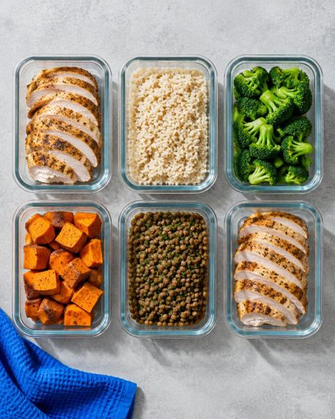
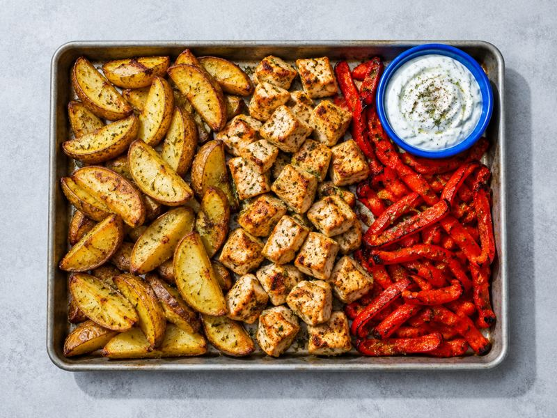
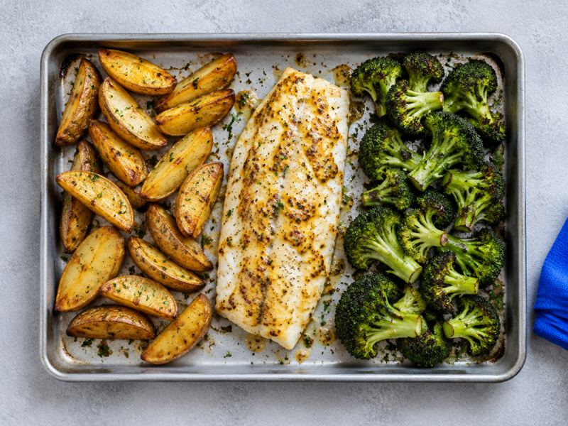
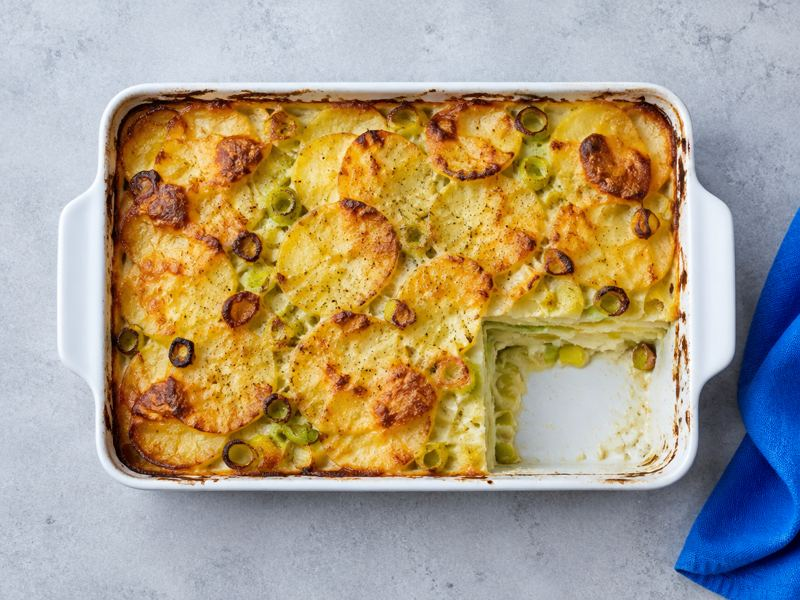
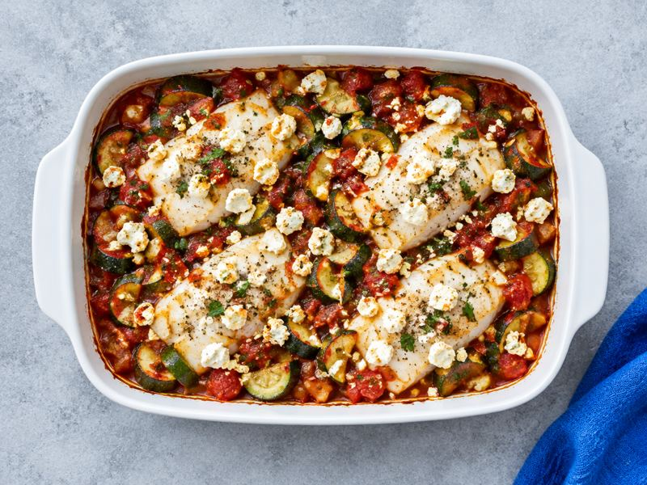
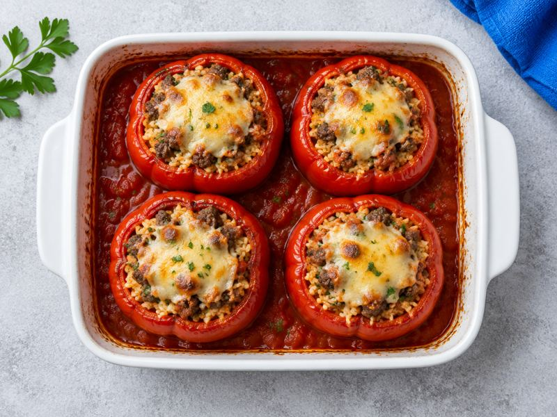
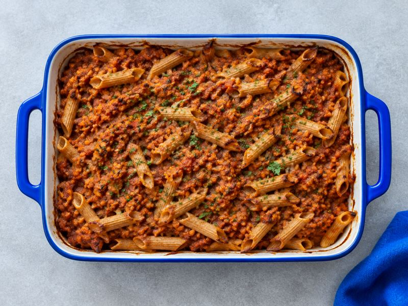

Makros treffen ist Rechnerei
Kochsatz skaliert die Portionen, bis Kalorien und Protein im Wochenschnitt passen. Im automatischen Test (2.800 kcal, 180 g Protein) liegt das Protein im Wochenschnitt bei mindestens 90 % des Ziels.
Deine Makros. Dein Discounter. Dein Plan.
Gib Kalorien, Protein, Kohlenhydrate und Fett ein, wähl Laden und Budget. Kochsatz baut die Woche aus zwei Kochtagen, rechnet die Portionen an dein Ziel an und schreibt die Einkaufsliste nach Abteilungen sortiert.
Ohne Konto. Deine Eingaben bleiben auf deinem Gerät.

Kochsatz skaliert die Portionen, bis Kalorien und Protein im Wochenschnitt passen. Im automatischen Test (2.800 kcal, 180 g Protein) liegt das Protein im Wochenschnitt bei mindestens 90 % des Ziels.
Zwei Kochtage, ein Ablauf mit Uhrzeiten, Boxen mit „essen bis“-Datum nach den Lagerempfehlungen des BfR, teils strenger.
Vorher planen statt hinterher eintragen. Die Nährwerte kommen aus einer Quelle: dem Bundeslebensmittelschlüssel 4.0.
Welche Zutaten bringen beim gewählten Laden am meisten Protein fürs Geld? Berücksichtigt sind nur Lebensmittel, bei denen mindestens 20 % der Energie aus Protein stammen.
| Zutat | Protein je € | Packung ca. |
|---|
Packungspreise sind Schätzwerte (Stand 10/2026, teils per Stichprobe geprüft). Fleisch und Fisch kosten laut Stichprobe oft mehr als hier geschätzt. Nährwerte: BLS 4.0, Max Rubner-Institut, CC BY 4.0.






Alle Preise und Bedingungen · Kündigen über „Verträge hier kündigen“, ohne Login, wirksam zum Ende der Laufzeit.
Nein. Kochsatz plant Essen nach den Zahlen, die du eingibst. Unter 1.200 kcal am Tag planen wir nicht.
Aus dem Bundeslebensmittelschlüssel 4.0 des Max Rubner-Instituts. Echte Produkte können abweichen.
Ja. Die meisten Ofenrezepte haben einen zweiten Weg für die Heißluftfritteuse.
Ein Tagesplan ist gratis. Plus kostet 6,99 € im Monat oder 44,99 € im Jahr (Laufzeit 12 Monate, danach monatlich kündbar), die ersten 7 Tage 0 €.